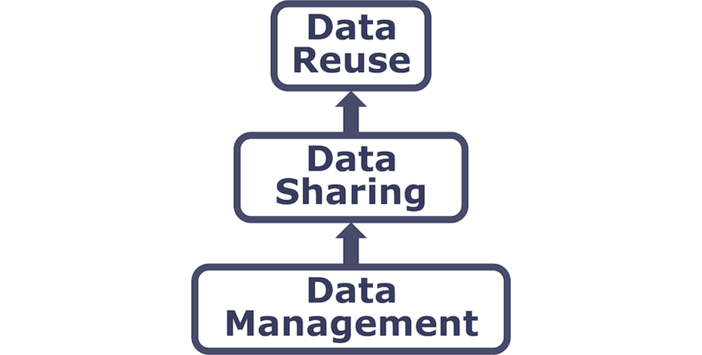

Learning Objectives
- Understand the major components of a data management plan
- Practice using metadata guidelines that are best for reproducibility
- Become familiar with environmental data repositories for accessing and publishing data
14.1 The Data Life Cycle
The data life cycle is a tool for facilitating successful management and preservation of data throughout a research project. Multiple versions of the data life cycle exist and vary in practice across domains or communities. For example, a meta-analysis project may only focus on the Discover, Integrate, and Analyze phases of the cycle.
DataOne’s Data Management Skillbuilding Hub offers several best practices on how to effectively work with your data throughout all stages of the data life cycle.
14.2 Writing Data Management Plans (DMPs)
A DMP is a document that describes how you will use your data during a research project, as well as what you will do with your data long after the project ends. Often a DMP encompasses all phases of the data life cycle - from planning, to collecting, to analyzing and ultimately to preservation and storage of the data.
These are important project aspects to deeply consider because a well-thought-out plan means you are more likely to:
- stay organized,
- work efficiently,
- truly share data,
- engage your team,
- meet funder requirements as DMPs are become more common in the submission process for proposals.
A DMP is both a straightforward blueprint for how you manage your data, and provides guidelines for your and your team on policies, access, roles, and more. While it is important to plan, it is equally important to recognize that no plan is perfect as change is inevitable. To make your DMP as robust as possible, treat it as a “living document” that you periodically review with your team and adjust as the needs of the project change.
14.2.1 How to Plan
- Plan early: research shows that over time data loss
- Plan in collaboration: high engagement of your team and stakeholders is not only a benefit to your project, but it also makes your DMP more resilient. When you include diverse expertise and perspectives to the planning stages, you’re more likely to overcome obstacles in the future.
- Utilize existing resources: don’t reinvent the wheel! There are many great DMP resources out there. Consider the article Ten Simple Rules for Creating a Good Data Management Plan [@michener2015], which has succinct guidelines on what to include in a DMP. Or use an online tool like DMPTool, which provides official DMP templates from funders like NSF, example answers, and allows for collaboration.
- Make revising part of the process: Don’t let your DMP collect dust after your initially write it. Make revising the DMP part of your research project and use it as a guide to ensure you’re keeping on track.
14.2.2 What to include in a DMP
| DMP Section | Guiding Questions / Things to Consider |
|---|---|
| Funder Requirements |
|
| Study Design |
|
| Data Collection |
|
| Data Organization |
|
| Quality Assurance and Quality Control |
|
| Data Policies |
|
| Data documentation & Metadata |
|
| Data Sharing |
|
| Roles and Responsibilities |
|
| Long-term Storage & Data Preservation |
|
| Budget |
|
14.3 Metadata Best Practices
Metadata (data about data) is an important part of the data life cycle because it enables data reuse long after the original collection. Imagine that you’re writing your metadata for a typical researcher (who might even be you!) 30+ years from now - what will they need to understand what’s inside your data files?
The goal is to have enough information for the researcher to understand the data, interpret the data, and then reuse the data in another study.
14.3.1 Overall Guidelines
Another way to think about metadata is to answer the following questions with the documentation:
- What was measured?
- Who measured it?
- When was it measured?
- Where was it measured?
- How was it measured?
- How is the data structured?
- Why was the data collected?
- Who should get credit for this data (researcher AND funding agency)?
- How can this data be reused (licensing)?
14.3.2 Bibliographic Guidelines
The details that will help your data be cited correctly are:
- Global identifier like a digital object identifier (DOI)
- Descriptive title that includes information about the topic, the geographic location, the dates, and if applicable, the scale of the data
- Descriptive abstract that serves as a brief overview off the specific contents and purpose of the data package
- Funding information like the award number and the sponsor
- People and organizations like the creator of the dataset (i.e. who should be cited), the person to contact about the dataset (if different than the creator), and the contributors to the dataset
14.3.3 Discovery Guidelines
The details that will help your data be discovered correctly are:
- Geospatial coverage of the data, including the field and laboratory sampling locations, place names and precise coordinates
- Temporal coverage of the data, including when the measurements were made and what time period (ie the calendar time or the geologic time) the measurements apply to
- Taxonomic coverage of the data, including what species were measured and what taxonomy standards and procedures were followed
- Any other contextual information as needed
14.3.4 Interpretation Guidelines
The details that will help your data be interpreted correctly are:
- Collection methods for both field and laboratory data the full experimental and project design as well as how the data in the dataset fits into the overall project
- Processing methods for both field and laboratory samples
- All sample quality control procedures
- Provenance information to support your analysis and modelling methods
- Information about the hardware and software used to process your data, including the make, model, and version
- Computing quality control procedures like testing or code review
14.3.5 Data Structure and Contents
- Everything needs a description: the data model, the data objects (like tables, images, matricies, spatial layers, etc), and the variables all need to be described so that there is no room for misinterpretation.
- Variable information includes the definition of a variable, a standardized unit of measurement, definitions of any coded values (i.e. 0 = not collected), and any missing values (i.e. 999 = NA).
Not only is this information helpful to you and any other researcher in the future using your data, but it is also helpful to search engines. The semantics of your dataset are crucial to ensure your data is both discoverable by others and interoperable (that is, reusable).
For example, if you were to search for the character string “carbon dioxide flux” in a data repository, not all relevant results will be shown due to varying vocabulary conventions (i.e., “CO2 flux” instead of “carbon dioxide flux”) across disciplines — only datasets containing the exact words “carbon dioxide flux” are returned. With correct semantic annotation of the variables, your dataset that includes information about carbon dioxide flux but that calls it CO2 flux WOULD be included in that search.
14.3.6 Rights and Attribution
Correctly assigning a way for your datasets to be cited and reused is the last piece of a complete metadata document. This section sets the scientific rights and expectations for the future on your data, like:
- Citation format to be used when giving credit for the data
- Attribution expectations for the dataset
- Reuse rights, which describe who may use the data and for what purpose
- Redistribution rights, which describe who may copy and redistribute the metadata and the data
- Legal terms and conditions like how the data are licensed for reuse.
14.3.7 Metadata Standards
So, how do you organize all this information? There are a number of metadata standards (think, templates) that you could use including:
- Ecological Metadata Language (EML)
- Geospatial Metadata Standards (ISO 19115 and ISO 19139)
- Biological Data Profile (BDP)
- Dublin Core
- Darwin Core
- PREservation Metadata: Implementation Strategies (PREMIS)
- Metadata Encoding Transmission Standard (METS)
Note this is not an exhaustive list.
14.3.8 Data Identifiers
Many journals require a DOI - a digital object identifier - be assigned to the published data before the paper can be accepted for publication. The reason for that is so that the data can easily be found and easily linked to.
Some data repositories assign a DOI for each dataset you publish on their repository. But, if you need to update the datasets, check the policy of the data repository. Some repositories assign a new DOI after you update the dataset. If this is the case, researchers should cite the exact version of the dataset that they used in their analysis, even if there is a newer version of the dataset available.
14.3.9 Data Citation
Researchers should get in the habit of citing the data that they use (even if it’s their own data!) in each publication that uses that data.
14.4 Publishing Data
14.4.1 Data Sharing & Preservation

14.4.2 Data Repositories: Built for Data (and code)
- GitHub is not an archival location
- Examples of dedicated data repositories:
- KNB
- Arctic Data Center
- tDAR
- EDI
- Zenodo
- Dedicated data repositories are:
- Rich in metadata
- Archival in their mission
- Certified
- Data papers, e.g., Scientific Data
- re3data is a global registry of research data repositories
- Repository Finder is a pilot project and tool to help researchers find an appropriate repository for their work
14.4.3 Data Packages
We define a data package as a scientifically useful collection of data and metadata that a researcher wants to preserve. Sometimes a data package represents all of the data from a particular experiment, while at other times it might be all of the data from a grant, or on a topic, or associated with a paper. Whatever the extent, we define a data package as having one or more data files, software files, and other scientific products such as graphs and images, all tied together with a descriptive metadata document.
These data repositories all assign a unique identifier to every version of every data file, similarly to how it works with source code commits in GitHub. Those identifiers usually take one of two forms. A DOI identifier is often assigned to the metadata and becomes a publicly citable identifier for the package. Each of the other files gets a global identifier, often a UUID that is globally unique. In the graphic to the side, the package can be cited with the DOI doi:10.5063/F1F18WN4,and each of the individual files have their own identifiers as well.

14.4.4 DataOne Federation
DataONE is a federation of dozens of data repositories that work together to make their systems interoperable and to provide a single unified search system that spans the repositories. DataONE aims to make it simpler for researchers to publish data to one of its member repositories, and then to discover and download that data for reuse in synthetic analyses.
DataONE can be searched on the web, which effectively allows a single search to find data from the dozens of members of DataONE, rather than visiting each of the (currently 44!) repositories one at a time.

14.5 Exercise: Outline a DMP and Publish a Data Package on the KNB Repository
Goal of the exercise: Practice outlining a DMP plan, identify quality metadata, and publish data on the KNB repository.
14.5.1 Instructions
- Considering your group’s research question and datasets outline a DMP for your project.
- Use the google doc template from the Setup box below.
- Investigate the metadata in the provided data.
- Does the metadata meet the standards we talked about? How so?
- If not, how would you improve the metadata based on the standards we talked about?
- Publish your project on NCEAS’ demo website for the KNB repository.
- Make sure to logon to KNB using your ORCiD.
- Elect someone to share back to the group the following:
- What went well?
- What was challenging?
- What did you like about submitting a data package? What features are missing?
- Go to this google sheet and find your group number
- Go to this google doc for DMP template
- Search for additional data on these repositories: DataOne, KNB, EDI